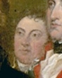

Robert Troup
Although most of his life was spent elsewhere, Robert Troup was in Albany during the latter stages of the Revolutionary war. He was the Albany roommate of historic rivals Alexander Hamilton and Aaron Burr - although not at the same time. Beginning in 1805, he again lived in Albany while he was a land agent.
Troup was born in New Jersey in August 1756. He was the son of privateer Captain Robert Troup of Elizabethtown. Both his parents died when Robert was in his early teens and he probably was raised by his much older siblings.
He first enrolled at Princeton but soon transferred to the King's College where he graduated in 1774. There, he was a roommate and friend of Hamilton. After graduation, Troup joined Burr in reading for the bar with Thomas Smith in Haverstraw. Then, he trained with Manhattan attorney John Jay. However, the War put his legal career on hold when he joined the Revolutionary army.
In May 1776, he was still not twenty when he was commissioned an officer in the New York militia. He was captured at the Battle of Long Island; confined to a prison ship and then in occupied New York City; was exchanged; served as aide-de-camp to General Gates at Saratoga; was appointed secretary of the Board of War by Congress in 1778; and of the Board of Treasury in 1779. He achieved the rank of lieutenant colonel. He resigned his commission in February 1780. However, afterwards, he was accorded a land bounty right in conjunction with the Albany militia regiment.
He may have first come to Albany with General Gates in 1777 - both before and after the battles.
Following service to Congress, Robert Troup returned to New Jersey to resume his legal education. In November 1781, Troup and Aaron Burr re-located to Albany. He helped tutor Hamilton for the Bar when both were living at Schuyler Mansion in 1782. Burr was admitted to practice in April but Troup was not licensed until a year later in April 1783. He tried his first case before the Albany Mayor's Court in September. Thus, he became part of the post-war Albany legal community and his practice began to grow.
He returned to New York almost immediately after the British evacuation.
His wife was Jennet Goelet. Between 1787 and 1795, the marriage produced six children - four of whom survived.
By 1790, he was living in New York City where his household consisted of eight members and two slaves.
Troup's Manhattan-based career in public service included the New York State Assembly and the Judicial system. By 1801, he had returned to his legal practice. In that year, he was named managing agent of the Pultney Estate.
In the Spring of 1805, he moved his family to Albany and into a house on Montgomery Street rented from Leonard Gansevoort to be in a better position to manage the Pultney property and for his general health. Disillusioned with the practice of law, it took him two years to completely shed his legal practice.
In 1806, Troup was characterized as of Albany when he erected a stately mansion on a large plot he owned in Geneva, New York. During those years, he was an agent for land sales in central and western New York. He seems to have been a resident of both Albany and Geneva. Later, his wife related of some anecdotes of their time in Albany in 1806.
By 1809, he owned the house, lot, and office on Montgomery Street where his property and holdings were assessed substantially.
At some time after 1809, he left Albany and returned to New York.
In 1822, an Albany publisher issued Troup's often-cited "Letter" on canal policy in New York State.
Robert Troup died in New York City in January 1832. This American patriot and one-time resident of Albany had lived seventy-six years.
Major R. Troup is said to be depicted in John Trumbull's "The Surrender of Burgoyne." Detail of him is taken from an online representation of the classic painting. A later portrait of Troup by Ralph Earl is said to be in a private collection.
{kind=link}